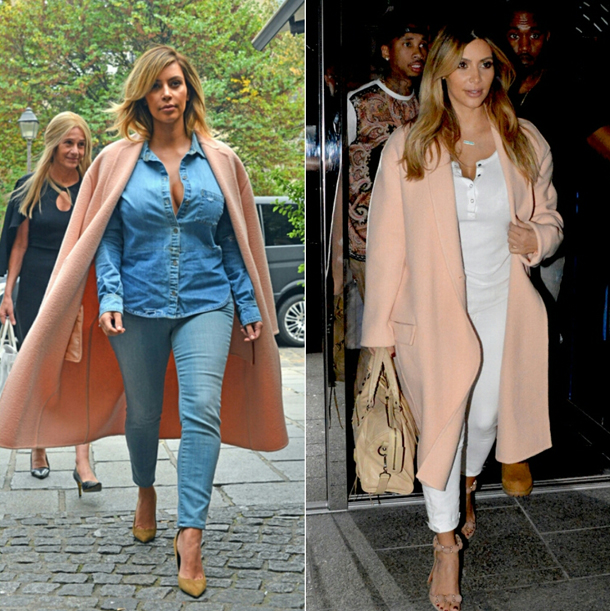

Fall Outerwear
This season's toppers come in all shapes, colors and sizes—including oversized coats, pale pink jackets, and chic bomber styles. Take your pick, and start warming up!
Fall’s abundance of oversized coats has us following the motto: the bigger the better. Whether you prefer leather, wool or fur, as temperatures drop the oversized coat is there to cater to your layers.
Though the dropped shoulder coat is nothing new, the Fall 2013 runways reminded us all how much we love the androgynous style. After months of light sundresses, an oversized topcoat almost makes us excited for the cooler temperatures ahead (or at least for the fashions that come with the seasonal change). Also promoting the trend of a pastel dropped shoulder coat was positively futuristic, a leather version of the style reinforced our love for the laid-back silhouette.